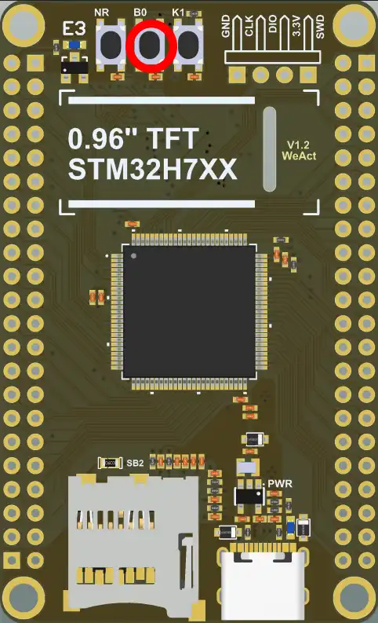

Web flasher
Flash PurrMIDI onto a WeAct STM32H743 Mini over USB straight from the browser: no STM32CubeProgrammer, no ST-Link. The firmware file is read and written locally and is never uploaded anywhere.
1 Choose the firmware
2 Put the board into bootloader mode
- Unplug the USB MIDI keyboard and any other power from the board.
- Hold the B0 (BOOT0) button, the middle one of the three at the top edge.
- Plug the board into the computer with a data USB-C cable.
- Release B0. The display stays dark.

3 Flash
The browser will ask you to pick a device: choose STM32 BOOTLOADER. Do not unplug the board until the result appears.
Log
Requirements
The flasher uses WebUSB, which exists only in Chromium-based browsers: Chrome, Edge, Opera, Brave and others, on desktop and on Android. Firefox and Safari do not support it; use STM32CubeProgrammer there.
Windows
No drivers or extra programs needed: Windows binds the WinUSB driver to the bootloader by itself. Tested on Windows with Chrome.
STM32CubeProgrammer keeps working with the board after web flashing, so you can use either tool. Only one program can hold the device at a time: if the browser says it cannot open it, disconnect the board in STM32CubeProgrammer (or close it).
If the device still cannot be opened, check in Zadig (Options → List All Devices, DFU in FS Mode, ID 0483 DF11) that the driver is WinUSB; if it is not, install it from there.
Linux
The browser needs permission to open the device. Create the file /etc/udev/rules.d/50-stm32-dfu.rules:
SUBSYSTEM=="usb", ATTRS{idVendor}=="0483", ATTRS{idProduct}=="df11", MODE="0660", TAG+="uaccess"
Then run sudo udevadm control --reload-rules and replug the board in bootloader mode.
macOS, ChromeOS, Android
No drivers needed. On Android you need an OTG adapter or a USB-C to USB-C cable, and Chrome.
The page must be opened over HTTPS (this site is). Linux, macOS and Android have not been tried on a real board yet: reports are welcome in Issues.
Troubleshooting
- The device list is empty. The board is not in bootloader mode: BOOT0 must be held before and while the cable is plugged in. Also try another cable (a data one) and another USB port.
- “Access denied” or the browser cannot open the device. The most common cause is another program holding the device (STM32CubeProgrammer, dfu-util): disconnect or close it. On Linux add the udev rule (see above); on Windows see the notes above.
- Connection lost during flashing. Use a short cable without a hub, enter bootloader mode again and retry. An interrupted write is safe: the bootloader is in ROM and cannot be erased, so you can always flash again.
- Display is dark after flashing. Make sure BOOT0 is released and press NRST (see the manual).
- Everything else is in the FAQ. If the flasher misbehaves, open an issue with the log from the page and your browser and OS.